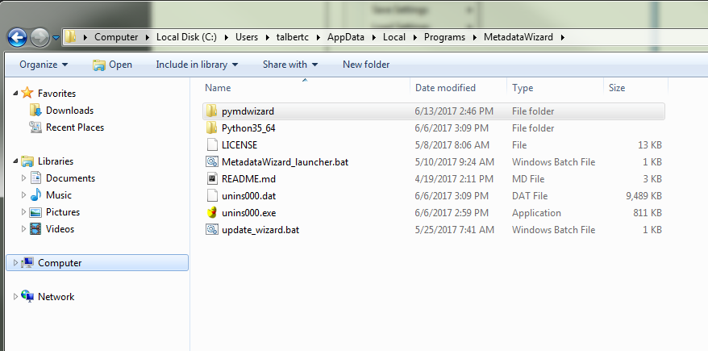
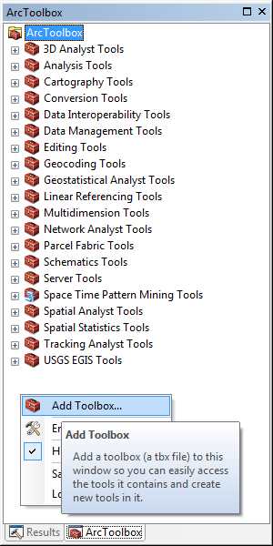
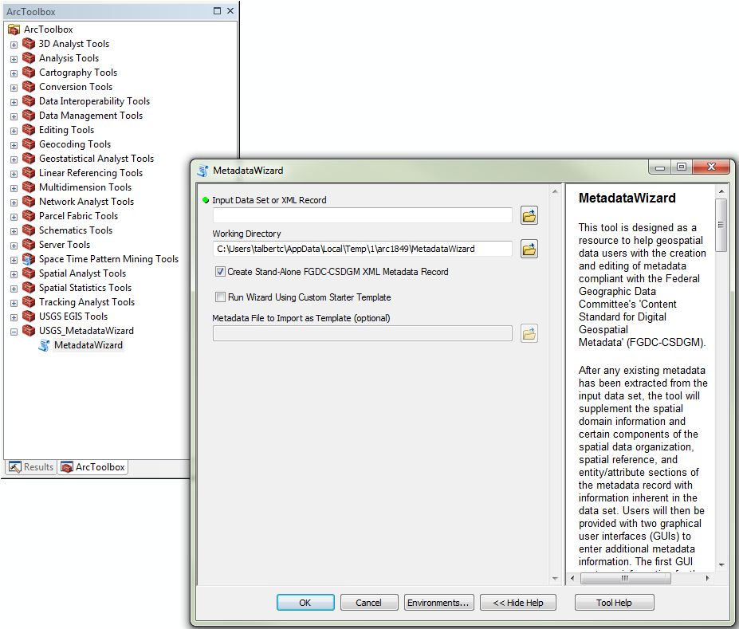

Installing ArcMap Toolbox¶
Users who want to access the Metadata Wizard 2.0 from ESRI in the same manner as the previous generation of the tool will need to manually add the Metadata Wizard 2.0 toolbox to their ArcToolbox. When using the tool from ESRI, some additional geospatial data types are supported for the auto-generation of spatial and entity and attribute information. Also, accessing existing metadata tied to a geospatial dataset, and saving and editing that metadata is facilitated.
The Windows installer provides all of the necessary components as part of the install package. Follow the steps below to add the toolbox to ArcToolbox:
Find the Metadata Wizard installation directory. If you installed into the default location this will be:
C:\Users\***YourUserNameHere***\AppData\Local\Programs\MetadataWizard
if you installed with elevated privileges:
C:\Program Files\Metadata Wizard
Note that the ‘AppData’ directory in this path is hidden by default, you will either need to manually type it into the folder path window in Windows Explorer or change your settings to display these hidden directories, see:
https://support.microsoft.com/en-us/help/14201/windows-show-hidden-files

- Start ArcMap or ArcCatalog and open the ArcToolbox pane. By right-clicking in the white space of the ArcToolbox pane and clicking ‘Add Toolbox’, users are prompted to navigate to the folder containing the toolbox. This will be in ‘..\pymdwizard\ArcToolbox’ under the folder identified above.

- Once the toolbox is installed, you will be able to access Metadata Wizard 2.0 using the previous tool’s ESRI interface:
